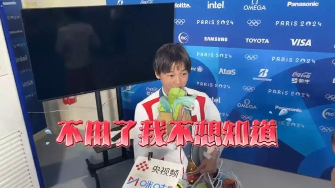
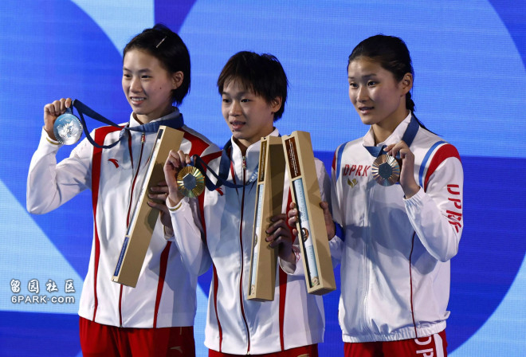
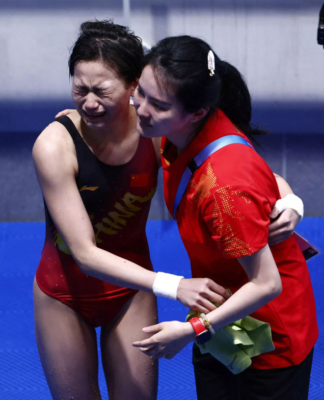

巴黎奥运女子10米台跳水决赛中，全红婵上演“水花消失术”，以425.60分的成绩夺得金牌，成功卫冕。比赛后，CGTN（央视旗下英文频道）记者竟突然考全红婵英文，但就遭到无情拒绝，“不会，不想知道”。而全红婵此举亦被网民盛赞到，“真爽，大部分人缺乏拒绝他人的能力，看起来全红婵没有这方面的困扰。”

CGTN记者突然考全红婵英文，但就遭到无情拒绝，“不会，不想知道”。（视频截图）
网传视频显示，在接受CGTN记者访问时，被问到“你总说小小巴黎拿捏，那我考一考你，拿捏用英语怎么说？”，全红婵回答，“不会”。
该名记者再次追问，“那我教教你好不好？”，则被全红婵直接拒绝，“不用了，我不想知道，不想知道。”而该名记者就只能尴尬大笑。

全红婵巴黎奥运女子10米台跳水决赛夺冠。（Reuters）
全红婵夺冠，收获大量粉丝赠送公仔。（微博）

跳完第五跳后，全红婵抱住教练陈若琳哭起来。（路透社）
相关内容在网络流传后，引发大量网民不满，有网民直指该名记者是想展现优越感，“很明显记者是知道全红婵英文不好的，还要故意问这个问题，还想在全红婵面前强行秀优越，结果被完全无视。大写的尴尬。从这能看出来，这名记者内心一股高高在上的优越感，人家全红婵是世界上跳水运动员里最优秀的。你有什么资格跟人家秀你会英语的优越呢？”
网民评论：
“英文那么好，不去采访美国运动员。”
“这种专业水平和情商居然可以当央视记者。”
“他当不了记者，就算不炒他鱿鱼，就扔他去其他岗位吧。”
“这次派出巴黎奥运会的体育记者们，其采访能力真的一言难尽。”
“全红婵应该反问‘你知道跳水需要掌握哪些基本要领吗？算了～跟你说了也听不懂！’”
“不是，记者是不是觉得运动员都没文化？问题就透着一股俯视的不尊重，人家用你考用你教？有病了属于是。”
“记者优越感的逻辑是这样的：你看你是世界冠军又咋样？不也不会英语吗？我教你吧，啥，你还不想学？你这不是与世界脱钩吗。